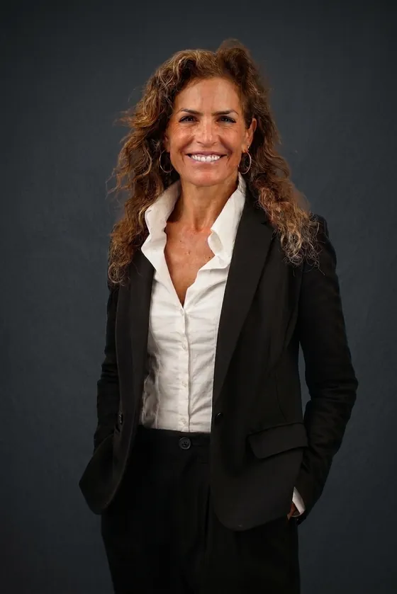
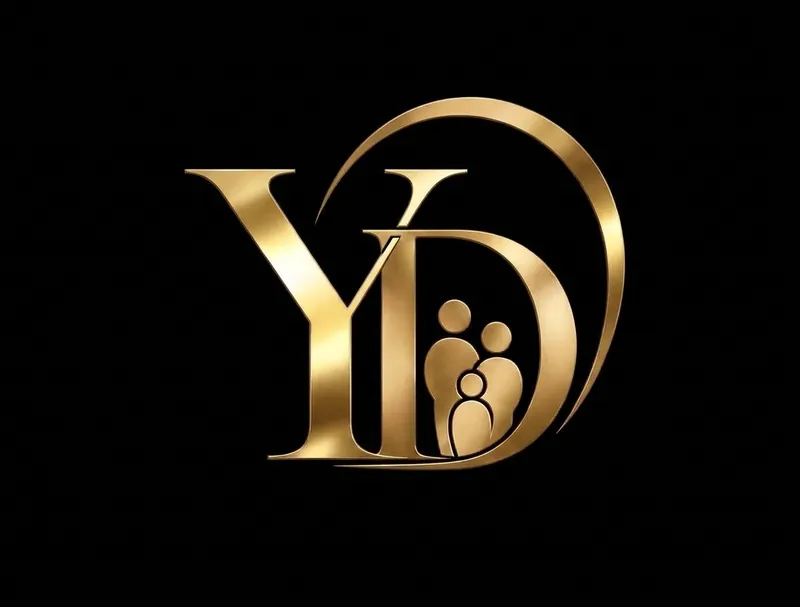

ניסוי 10 · בלי מלבן
צבע העמוד לקוח מאפור הסטודיו. בלי מסגרת, בלי זוהר, בלי כרטיס. השוליים נמוגים לצד הטקסט — התמונה היא החדר, לא אובייקט עליו.

לוגו בלי תמונת לוגו
ערבוב מסך על רקע שחור: הריבוע של קובץ ה־JPG מתפרק. הסימן לא יושב בטור ליד הטקסט — הוא החותם של הפסקה.